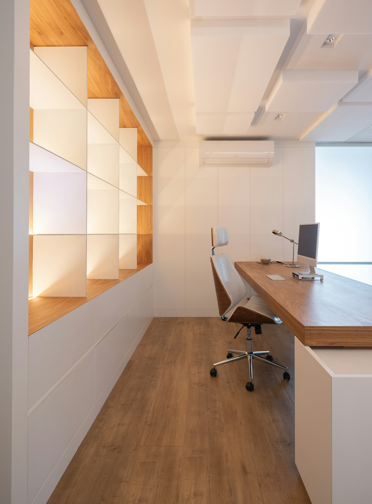

博多
新幹線・JR・空港アクセスを説明しやすく、県外取引や出張が多い事業と相性がいい。

GMOは博多と天神、DMMは天神。住所エリアと郵便管理を分けて比較します。
| 候補 | 所在地・駅 | 登記対応 | 強み |
|---|---|---|---|
| GMO 博多 | 博多区博多駅前1丁目／博多駅徒歩7分 | 月1転送1,650円〜 | 博多住所・低固定費 |
| GMO 天神 | 中央区天神2丁目／西鉄福岡（天神）徒歩1分 | 月1転送1,650円〜 | 天神の駅近住所 |
| DMM 天神 | 中央区天神4丁目／天神駅徒歩6分 | Basic 2,530円/月換算 | 週1転送・写真確認 |
新幹線・JR・空港アクセスを説明しやすく、県外取引や出張が多い事業と相性がいい。
福岡の商業中心地として分かりやすく、対外イメージを重視する事業に向く。
ChatGPT・Claude・Geminiが、料金・法人登記・郵便・立地・会議室・将来の拡張性を同じ軸で独立評価しました。
| 評価者 | 1位 | 2位 | 3位 | 判断ポイント |
|---|---|---|---|---|
| ChatGPT | GMO 天神 | GMO 博多 | DMM 天神 | 天神徒歩1分と低固定費を評価 |
| Claude | GMO 天神 | GMO 博多 | DMM 天神 | 同額なら駅距離で天神を優先 |
| Gemini | GMO 天神 | GMO 博多 | DMM 天神 | コストと立地でGMO天神 |
クロスチェック実施：2026年9月15日｜ページ更新：2026年9月16日。料金・提供条件は変更される可能性があるため、契約前に各社公式サイトで再確認してください。
月額だけでなく、法人登記の可否、郵便転送頻度、写真確認、初期費用、会議室や来店受取まで含めて比較する方が安全です。
住所だけで法人口座の審査結果が決まるわけではありません。事業実態、取引内容、Webサイト、本人確認資料などを含めて個別に判断されます。
最終確認日：2026年9月16日